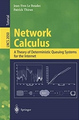
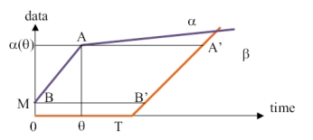

The Network Calculus Book

The Network Calculus book by Jean-Yves Le Boudec and Patrick Thiran
pdf
The book is also available as Springer-Verlag Lecture Notes
on Computer Science number 2050.
What is Network Calculus ?
Network Calculus is a collection of results based primarily on min-plus algebra, which
applies to deterministic queuing systems found in communication networks.
It can
be used to understand:

- what is a T-SPEC or arrival curve constraint;
- how to compute delay and backlog bounds in deterministic or time sensitive networks;
- why
re-shaping delays can be ignored in shapers or spacer-controllers;
- a
common model for schedulers;
- and
much more.
Tutorials
- "A Short Introduction to Network Calculus", pdf, IMAG, Grenoble, Nov 12, 2019,
- "A Long Introduction to Network Calculus", pdf, video, Dagstuhl Seminar on Analysis, Design, and Control of Predictable Interconnected Systems, March 4 and EPFL April 5, 2019,
- A Short Course (2 to 3 hours) ppt pdf
- EPFL Doctoral School 2005 click here
- Pisa July 2003 click
here
- Sigmetrics
June 2002 ppt pdf
- ENS
May 2001 (systems theory aspects) ppt pdf
Other Textbooks